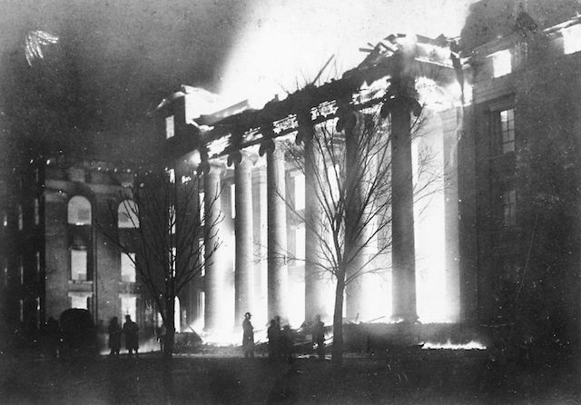

The Academic Hall Fire
On January 9, 1892, Academic Hall, the institution's main building, burned in a fire that completely gutted the building, leaving little more standing than six stone Ionic columns. Under the administration of Missouri Governor David R. Francis, the university was rebuilt, with additions that shaped the modern institution. On January 9, 1892, Academic Hall, the institution's main building, burned in a fire that completely gutted the building, leaving little more standing than six stone Ionic columns. Under the administration of Missouri Governor David R. Francis, the university was rebuilt, with additions that shaped the modern institution. (Wikipedia)
